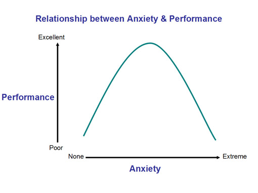

No doubt you’ve had butterflies in your stomach at some point in your life. Maybe it was before you pitched the last game of the high school playoffs or did a sales presentation for a big client. You know the feeling. But did you know that nerves actually help you perform at your peak?
People don’t perform at their best when they are comfortable. It’s true, and science backs it up.
The relationship between anxiety and performance most often applies to people who perform in public — think athletes, public speakers and Broadway actors — but the same idea applies to marketers.
Have you ever considered that your blog post or email is actually a performance? Think about it: Many people will see and read that post or email. Some will love it, and some might hate it. Still others might be bored by it. The results of your performance are measured in clicks, page views and shares. When you think about it like that, marketing starts to seem really intimidating.
Get Comfortable Being Uncomfortable
In order to perform at your best, your mind and body need to be adequately stimulated. Those butterflies you’ve felt are actually the result of increased adrenaline flowing through your system. Your heart rate increases and your breathing quickens as your body prepares for action. The symptoms of adrenaline are felt in your stomach because, according to Greatist, “Muscle tension (especially in the stomach) helps keep us alert.â€
Too much or too little adrenaline can result in a poor performance. If you are too nervous or rattled to perform, you choke. In other words, you don’t reach your potential because you can’t focus on the task in front of you. Too little stimulation, however, and your complacency results in a subpar performance.

Studies of this phenomenon have been done, and they’ve usually focused on the choking aspect. Asking why people choke can help us understand how to peak, according the the Harvard Business Review:
To achieve optimal performance — what some psychologists call flow — parts of your brain should be on automatic pilot, not actively thinking about (or “explicitly monitoringâ€) what you are doing. [University of Chicago cognitive psychologist Sian] Beilock has found that she can dramatically improve athletes’ performance, at least in experiments, by getting them to focus on something other than the mechanics of their stroke or swing. Having them recite a poem or sing a song in their heads, distracting their conscious attention from the physical task, can rapidly improve performance. Chronic chokers — especially those who are clinically anxious — are too distracted from the task at hand by a relentless interior monologue of self-doubt: Am I doing this right? Do I look stupid? What if I make a fool of myself? Can people see me trembling? Can they hear my voice quavering? Am I going to lose my job?
Now that we have a solid understanding of how discomfort affects performance, let’s see how we can apply that knowledge to marketing.
Fight-or-Flight Marketing
It’s easy to see how adrenaline could boost a football player’s performance, but wouldn’t it have the opposite effect on a marketer of content or email?
Most marketers spend a lot of time writing. Writers are often encouraged to find quiet places where they can focus and draw creative inspiration. A hot cup of coffee and a comfy chair might replace pumped-up music and a pep talk. Adrenaline doesn’t exactly help writers perform better; in fact, it could make focusing on the task quite difficult. Writers often write every day, and a steady flow of nervous energy could have some detrimental health effects.
The notion of getting uncomfortable, however, still very much applies to marketers. To show you exactly what I mean, here are five ideas for getting out of your comfort zone and performing at your very best.
1. Write about a brand-new topic.
This is exactly what I’m doing today. I write a lot of practical posts … ideas for growth hacks, examples of great email campaigns, etc. Our readers find those posts to be really helpful, but I know that for my own growth as a marketer, I need mindset advice, too. That’s exactly what this post is designed to do.
Here are a few reasons why writing on a new topic can make you uncomfortable:
- It takes longer. This is because you have to do additional research and familiarize yourself with new subject matter.
- It forces you to discover new influencers. For most of our articles, I can get everything I need from my Feedly account and my swipe file of email examples. That wasn’t true for this post; I found several new blogs and writers while working on this post.
- It forces you to think outside the box. Can I approach this new content in the same way I would approach something more comfortable? Maybe not, which means I have a great opportunity to assess my writing workflow.
2. A/B test a wild idea.
It’s always good to A/B test things like subject lines and landing-page copy, but what if you took the time to test something really outrageous?
Here’s a perfect example: In my last post on the Vero blog, I included a unicorn. I sent an email about the new post to our subscriber list and A/B tested two subject lines:
- 5 Reasons Why Email Marketing Fails
- Why Email Marketing Fails
What a safe experiment! In retrospect, even if one subject line had outperformed the other, I’d have learned next to nothing. Meanwhile, I had an image of a unicorn dancing across a rainbow that I should have referenced in a subject line. If I were to do this test again, here are the subject lines I would test:
- 5 Reasons Why Email Marketing Fails
- Do you know how unicorns are born?
You get my point. Test something that will actually provide useful data, and don’t be afraid to get a little crazy. In a great A/B test, the A and the B should be very different.
3. Experiment with a new format.
If you write articles or email copy often, it’s easy to get stuck in a format rut. Lists and bullet points often make for great writing and easy reading, but the format also traps writers in a comfort zone that can affect the quality of the content.
Along the same lines as the idea above, try to write something really different. If most of your posts are 500 words, try to tackle a 2,500-word guide. Or if your posts are long-winded, see if you can boil an article down to less than 100 words. (HubSpot has a cool series of posts that are under 100 words.)
You might even consider penning an essay as a response to someone else’s article or writing a haiku. Just try it. It might stink, but it could be just the creative kick in the butt you’ve been looking for.
4. Get personal with your readers.
In a recent episode of This American Life titled Call For Help, reporter Anna Sale told a very personal and moving story about her love life. Basically, she and her boyfriend split up, and then that ex-boyfriend recruited a senator to help win Anna back. You can’t tell a story like that without revealing some details of the breakup and, in this case, the reunion. It’s this kind of storytelling that keeps This American Life at the top of the iTunes “most downloaded” list.
Let’s consider for a moment why people read, listen or watch content in the first place. People crave an emotional connection that makes them feel something. This is why a podcast like This American Life flourishes while countless others flounder. It’s the reason that sites like Copyblogger have skyrocketed to enormous success while thousands of others — even ones with massive budgets — never get off the ground.
Getting personal in content or email marketing doesn’t have to mean talking about your personal relationships, but real-world examples, like the one about the unicorn described above, have a way of connecting with an audience. Buffer is embracing this in a different way: transparency. It’s a unique approach, but the idea is the same — the information is real, raw and personal.
5. Commit to a big project.
There is something to be said for consistency, but pumping out three 500-word blog posts and one email per week can get tedious after a while, so why not dedicate that time to something big?
Our CEO, Chris Hexton, taught me this lesson in February, when he dropped the 10,000-word beast The Ultimate Guide to Successful Email Marketing. Instead of writing his normal one or two posts each week, he dedicated all that time to creating something really massive, and the results were massive as a result. Your readers and email subscribers are easily distracted, so don’t bore them by giving them the same thing all the time. A big project is the perfect way to grab their attention again. Here are a few ideas to get you thinking about a big project that could take your marketing to the next level:
- E-book (Example)
- Guide (Example)
- Webinar (Example)
- Quiz (Example)
- Survey (Example)
- Infographic (Example)
- SlideShare (Example)
For extra guidance, here’s a great post from Mackenzie Fogelson on creating “big†content.
Do you have any tips for getting out of your comfort zone and performing at your best? Let us know in the comments.